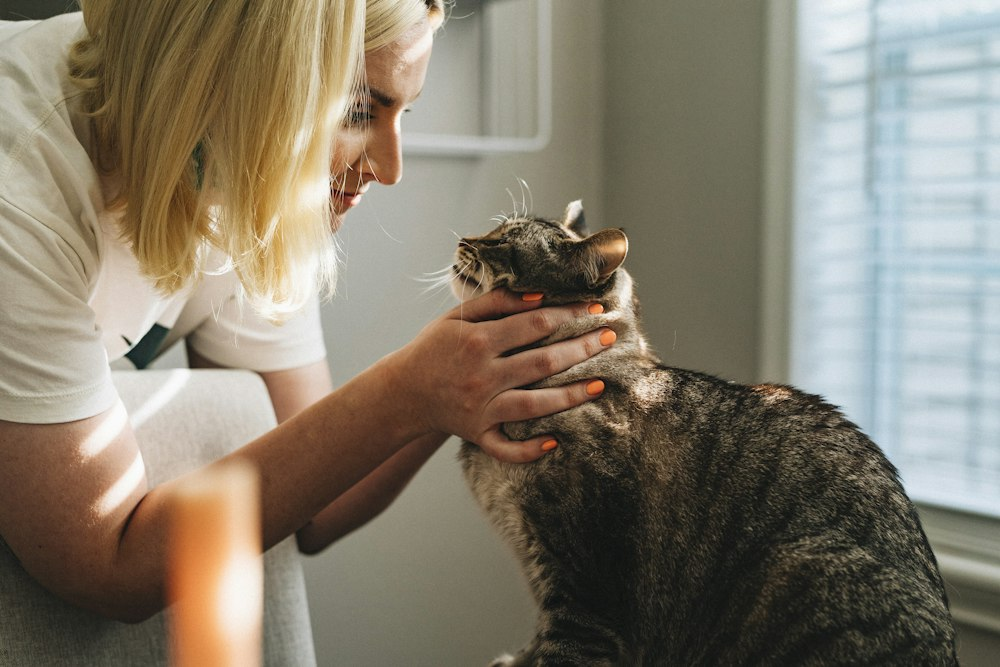

80 €
Revisión completa de su vida en casa
Evaluación integral de bienestar
Condiciones de vida, alimentación y condición corporal, actividad, contacto, señales de estrés y seguridad del hogar. En la videollamada me enseñas la casa con la cámara.